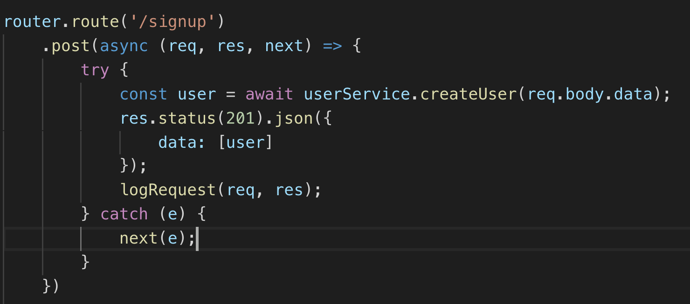

Welcome to Mark n' Munch
We are going to learn about making your own API for teaching purposes
Our goal is to learn about building a scaleable and descriptive API that is accurately representative of APIs students may experience in the wild.
Tools
NodeJS
Node allows us to run JavaScript on the server. Node allows us to run our API, communicate with our database, and do everything build related.
MongoDB
This is a popular and great choice for your database since data is organized into documents, and these documents very closely resemble JavaScript objects.
Mongoose
Mongoose is utilized for our connection between Node and MongoDB. In addition, within our server file, mongoose is used to establish the connection to our database.
JWT
This is a module that we can use to generate a randomized token for us. It also gives us some handy token validation methods.
Express
This allows us to simplify our routing, and provides immensely helpful methods to keep our HTTP requests simplified and clean.
Why Do It?
Control
Relying on other people's APIs when teaching is tough. If the API goes down, someone is having trouble getting their API key, or other problems arise, we are at the mercy of the API.
With our own API, we can simply generate back up tokens, respond faster if the API goes down, develop the API to meet our exact needs, and more!
Style points
It makes us look cool.
Getting Started
The hardest part is always getting started!
I like to think about it by going through the whole flow of information from the front-end to the back-end.

Front - Login.js

Routes vs. Middleware vs. Utils
Routes
This will hold the information specifying what happens when the endpoints of our API are hit.
Back - userRoutes.js
Middleware
Middleware is where we can define actions that our application should run through. Middleware expects the layer to do some computation, augment parameters, and call `next` as a callback function.
Utils
This will hold our helper functions, as well as any constants that are required in our application.
Server.js
This is like the package.json file of the backend
This serves as the entry point for our API. Within here, we will set up necessary configurations, link the necessary segments of our API, and start the server and connection to our database.
TODO: SCREENSHOT HERE SHOWING THE FOLDER STRUCTURE OF API WITH SUBFOLDERS OF MIDDLEWARE, ROUTES, AND UTILS
Routes: Models, Routes, and Services
Models
This is where we set up our schema. This maps to the way our information is stored in our database
TODO: SCREENSHOT HERE OF THE USER SCHEMA FROM SHOPAROO
TODO: POSSIBLY ALSO SCREENSHOT OF DATABASE DOCUMENT THAT MATCHES THIS SCHEMA
Routes
This will specify the logic that will happen when hitting different endpoints
TODO: SCREENSHOT OF /SIGNUP AND THE ROUTER IMPORT
Services
This will contain helper functions that we can use within our routes to perform important actions and reduce code repetition.
TODO: SCREENSHOT OF CREATEUSER FUNCTION IN SHOPAROO
Databases
Thinking about database structure and how our collections relate will structure our code!
For example, the cart can have multiple cart items in an online store
Database Relationships
Understanding how different collections relate to one another + operator!
Gotchas
The biggest gotcha I experienced was dealing with authentication with tokens and email verification.
One verification token cannot be used to lock down.
I had never completed any email validation before so figuring out that flow was super confusing for me.
SCREENSHOT OF EMAIL VERIFICATION STUFF
Deployment
I found this part horrendously painful
Used Digital Ocean for deployment which thankfully has some nice documentation
Setting up Certbot was a wild time as well. Had never worked with certificates or https
Updating
How do we make changes to the API once it has been deployed and if people are using it.
The flow
Have to get comfortable with SSH-ing to a remote server
Made a separate user on the remotely deployed server. Called this user apiuser and has a clone of the code base. As a result, can pull the updated code from git.
Had to learn a bit about pm2 which is a process manager that let's us run stuff
Certificate renewal process
Have to go through Certbot which offers the command of 'renew'
Requires some familiarity with Nginx web server
Extra Resources
- Check out the new Full Stack code along - Shoparoo
- Notes on deploying Node.js to an Ubuntu droplet here